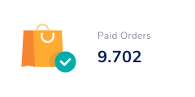

CREDITO CONSIGNADO RÁPIDO E DESCOMPLCADO
Empréstimo Consignado Online
Com as melhores taxas, rápido e descomplicado para você aposentado e pensionista do INSS.
SOLICITE AGORA

Com as melhores taxas, rápido e descomplicado para você aposentado e pensionista do INSS.
SOLICITE AGORA
Precisa de mais informações sobre como podemos te ajudar a ter o seu empréstimo com as melhores taxas?
ENTRE EM CONTATOAcesse agora nossa calculadora e simule seu empréstimo com as melhores taxas do mercado
SIMULE AGORAFale agora com um de nossos operadores para tirar suas dúvidas, simular seu empréstimo consignado direto no WhatsApp e com as melhores taxas do mercado?
FALAR AGORAO empréstimo consignado é uma modalidade de crédito destinada a aposentados, pensionistas e servidores públicos. No consignado, o valor das parcelas de seu empréstimo é descontado automaticamente de sua folha de pagamento ou benefício do INSS.
SOLICITE AGORAA margem consignável é a porcentagem de 30% do seu benefício do INSS ou salário que pode ser comprometida com contratos de empréstimo consignado.
Caso você não possua margem consignável disponível para a contratação de novos empréstimos consignados, você pode realizar uma portabilidade de consignado.
SOLICITE AGORAPara aposentados e pensionistas
Para aposentados, pensionistas, militares e funcionários públicos que já usaram a margem do empréstimo com desconto em folha. É dinheiro direto na sua conta!
SOLICITE AGORAPrincipais dúvidas para ajudar você
Você será informado pelo INSS de que passará a receber seu benefício aqui no Agibank. Após ser comunicado, vá até o ponto de atendimento indicado levando um documento de identificação atualizado e com foto (RG, CPF, CNH, Passaporte ou RNE). Ao ser atendido por um de nossos consultores, escolha entre receber seu benefício por Cartão Magnético ou diretamente em conta corrente, com as vantagens de ser um cliente Agibank. Assim, você poderá sacar o valor do seu benefício nos caixas eletrônicos dos pontos de atendimento Agibank, Banco24Horas ou rede Saque e Pague, ou optar por realizar compras no débito! Mas lembre-se: se em 60 dias você não sacar seu benefício, o valor será devolvido ao INSS. Quer saber todas as datas em que receberá seu pagamento? Acesse a página Benefício INSS e descubra!
Não! Caso você não consiga ir até um de nossos pontos de atendimento para sacar seu benefício, o seu Representante Legal (pai/mãe, pessoa que detêm a guarda judicial ou administrador provisório) poderá realizar o saque, desde que devidamente identificado por um documento oficial, atualizado e com foto. Caso você tenha um Procurador, ele deverá estar cadastrado no INSS para poder sacar seus valores, além de apresentar o documento informado no cadastro de procuradores recebido pelo banco do INSS.
Ao ser informado pelo INSS de que passará a receber seu benefício conosco, compareça a um de nossos pontos de atendimento para retirada do seu Cartão Magnético! Esse cartão permitirá que você saque os valores em caixas eletrônicos nos pontos de atendimento Agibank, Banco24Horas ou rede Saque e Pague. Além disso, ele também terá a função débito, permitindo que você realize compras em diversos pontos comerciais e subtraindo os valores diretamente de seu saldo. Perdeu seu cartão? Não se preocupe! Dirija-se até um de nossos pontos de atendimento portando um documento de identificação que faremos uma 2ª via pra você.
Claro, você pode escolher em qual banco deseja receber seu salário independente do local designado pelo INSS! Se você recebe em outro banco, aproveite e traga o seu benefício para o Agibank sem custos adicionais. Para solicitar a transferência, vá até um de nossos pontos de atendimento levando um documento de identificação e peça ao consultor para realizar a alteração de seu domicílio bancário para o Agibank. Seu benefício será transferido em até 45 dias! Porém, lembre-se que o primeiro pagamento deve obrigatoriamente ser realizado no local indicado pela Carta de Concessão do benefício, que você receberá do INSS.
A Prova de Vida dos beneficiários do INSS é um procedimento obrigatório que deverá ser realizado anualmente. Mas fique tranquilo! Nós iremos comunicar você antecipadamente sobre a data prevista para regularização. Para realiza-la, você deve ir até um dos pontos de atendimento Agibank levando um documento de identificação com foto (RG, Carteira de Trabalho, CNH, entre outros) e fazer a biometria para comprovação de vida, que será renovada por mais um ano. Caso você não faça a Prova de Vida, poderá ter seu benefício bloqueado. Lembre-se: se estiver impossibilitado de realizar o procedimento, poderá realizar a Prova de Vida por meio de um procurador, que deve ser previamente cadastrado junto ao INSS.
Atualmente temos as seguintes modalidades, dependendo do público e canal de solicitação: - Cartões de crédito Consignado: para aposentados e pensionistas do INSS;- Cartões múltiplos débito e crédito: para correntistas Agibank.
Com nosso cartão você realiza compras à vista e parceladas e faz saques em dinheiro em toda rede credenciada Mastercard. Todos os clientes podem contar com os benefícios da bandeira, como o programa Mastercard Surpreenda (saiba mais em https://www.mastercard.com.br/pt-br/consumidores.html). Clientes com cartão múltiplo podem ainda fazer transações a crédito no exterior, presencialmente ou pela internet. Além disso, podem acompanhar suas movimentações em tempo real, com opção de bloqueio e desbloqueio preventivo do cartão a qualquer momento, pelo aplicativo.